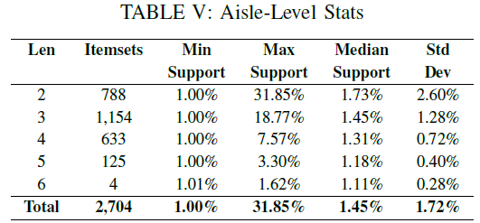
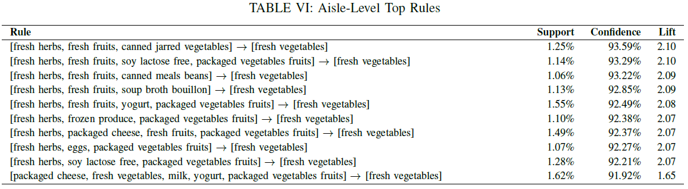
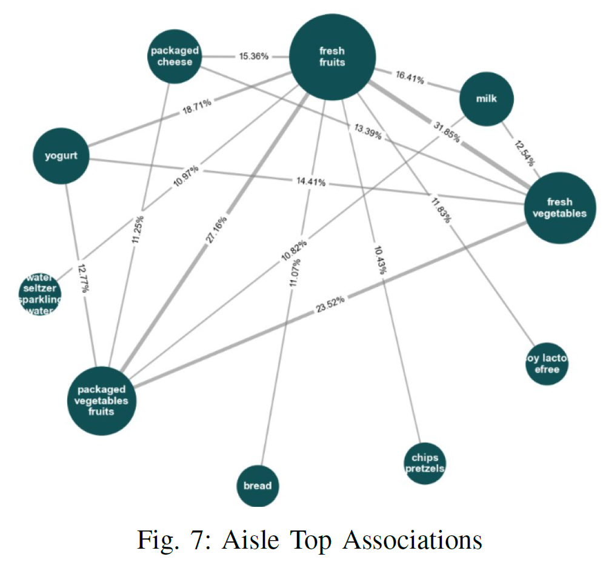
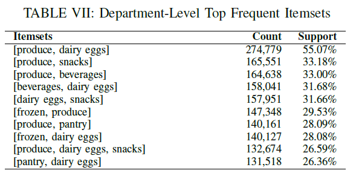
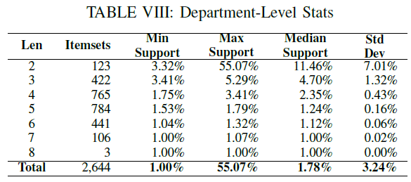
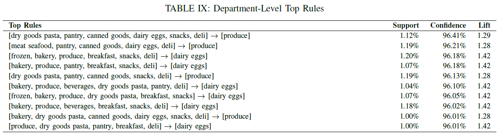
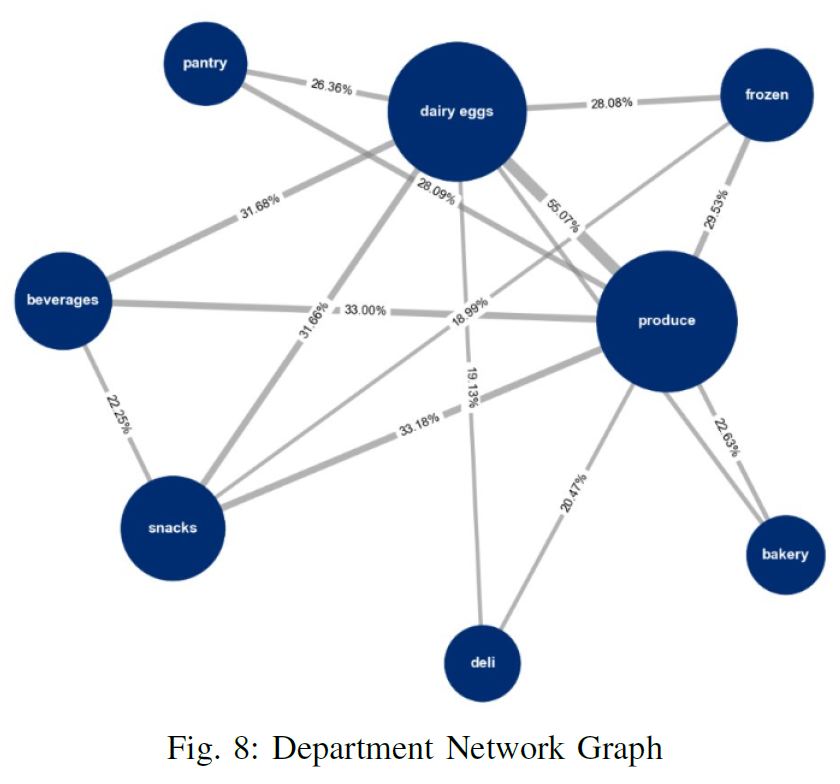

Association Rule Mining (Apriori Algorithm)
Association Rule Mining (Apriori Algorithm) is used to identify predictable and hidden relationships between items purchased together within a single Instacart transaction. The analysis is driven by three core metrics that are used to evaluate the strength and importance of each rule:
- Support: Measures how frequently an item combination appears in the entire dataset.
- Confidence: Indicates the reliability of the rule (e.g., the probability of buying item Y given that item X has already been purchased).
- Lift: Quantifies the strength of the association. A Lift value greater than 1.0 means the two items are more likely to be bought together than if they were independent, confirming a positive relationship.
Products Frequently Purchased Together
Table II shows the top frequent itemsets for products frequently purchased together with parameters set for minimum support of 0.5% and minimum confidence of 30%. A total of 76 frequent itemsets with a maximum length of 2 were identified. The most frequent associations occur within produce, especially fruits.

Table III shows the 6 association rules generated by the model displaying a strong confidence and lift. Bananas are a strong anchor product, appearing in all rules.

Frequent Aisle Combination
The top frequent itemsets at the aisle level are analyzed. Because the number of ailes is considerably lower, a greater support is expected, therefore the threshold have to be adjusted, the minimum support was set to 1% while the minimum confidence is kept at 30%. This resulted in 2,704 frequent itemsets with a maximum length of 6. In addition, 6,517 rules were generated. Table IV shows the top frequent itemsets generated.

Table V chart shows the results of the Apriori analysis and highlights the sparse nature of grocery purchases. The number of popular combinations drops very quickly as the length increases from 2 items to 3 items and beyond. This pattern confirms that while customers have core items they buy regularly, the specific combination of many different products in a single basket is rare. Therefore, the most valuable and statistically reliable product relationships for generating crossselling ideas are found in the shorter combinations, mainly those containing just two or three items.
The top rules generated for aisle combinations, displayed on Table VI, reveal that the purchase of fresh vegetables is consistently the primary outcome, the consequent, indicating its role as a strong anchor item in multi-aisle purchasing patterns. The antecedent items most frequently associated with this purchase are combinations involving fresh herbs, fresh fruits, and packaged vegetables fruits. All the rules demonstrate extremely high confidence, mostly above 92%, which means that if a customer buys the antecedent items, they are very likely to also purchase fresh vegetables, the consequent item. Furthermore, the lift value for almost every rule is greater than 2, signifying a very strong positive correlation and co-purchasing behavior between the specific combinations of items suggesting these items are purchased together more often than would occur by chance.
The aisle-level network represented in Figure 7 visualizes the strongest associations between grocery aisles based on customers’ co-purchasing behavior. Each node represents an aisle, and the size of the node reflects its relative frequency in the dataset, larger nodes correspond to aisles that appear more often in customer baskets. Edges between nodes indicate that items from those aisles frequently occur together within orders, and the thickness of each edge is proportional to the strength of the association. The percentages shown on the edges represent the corresponding support.
Frequent Department Combination
Analyzing the frequent department combinations, the strongest purchase patterns were observed. They revolve around Produce and Dairy Eggs, which are present in the combinations with highest support (55.07%). The top frequent itemsets show that Produce and Dairy Eggs are key anchors, consistently appearing alongside other departments like Snacks (33.18%), Beverages (33.00%), and Pantry (28.09%), as displayed on Table VII
The analysis generated 2,644 frequent itemsets, reaching a maximum length of 8 departments in a single combination as shown on Table VIII.
The rules generated for department combinations highlights that Produce and Dairy Eggs are the strongest anchor departments in multi-department purchasing patterns, acting as the consequent in many of the top association rules. The top rules show very high confidence, all over 96%, particularly, those involving antecedents like snacks, deli, and produce as shown on Table IX.
Figure 8 shows the network relationship across the 21 departments. The analysis was performed with a minimum support of 1% and a minimum confidence of 30%. This yielded 2,644 frequent itemsets and 27,262 association rules. The network graph helps visually highlight the key relationships between departments.
